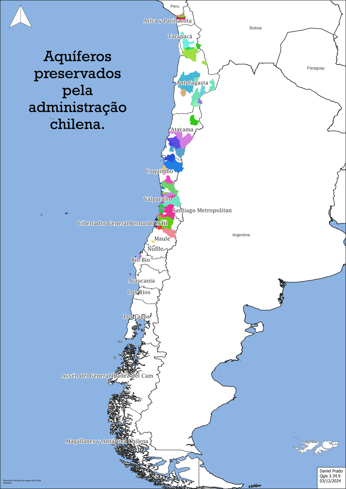

| Este mapa apresenta os aquíferos protegidos pelo governo do Chile, com destaque para sua distribuição geográfica, que se concentra principalmente nas regiões central e norte do país. Esses aquíferos desempenham um papel estratégico na segurança hídrica, especialmente em áreas onde a disponibilidade de água superficial é limitada. Nas regiões áridas do norte, os aquíferos sustentam populações locais e atividades econômicas essenciais, como a mineração e a agricultura de pequena escala. No centro do Chile, essas reservas subterrâneas são fundamentais para o abastecimento urbano e rural, além de contribuírem para a irrigação em uma das áreas agrícolas mais produtivas do país. A proteção dessas fontes reflete a importância de garantir o uso sustentável e preservar a qualidade dos recursos hídricos em um país com desafios climáticos crescentes. Os dados utilizados para a elaboração deste mapa foram obtidos por meio de fontes oficiais, como a Infraestructura de Datos Espaciales (IDE) e a Dirección General de Aguas (DGA). Essas instituições desempenham um papel central no monitoramento, na regulamentação e na implementação de políticas para proteger os aquíferos, promovendo sua conservação em benefício das gerações atuais e futuras. |  |